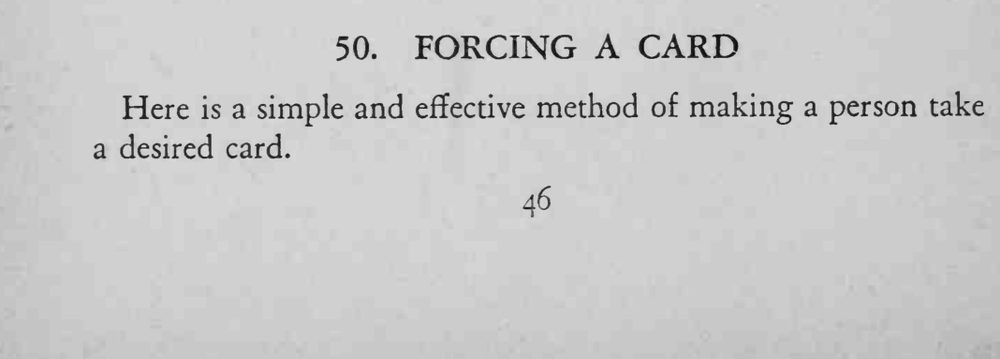
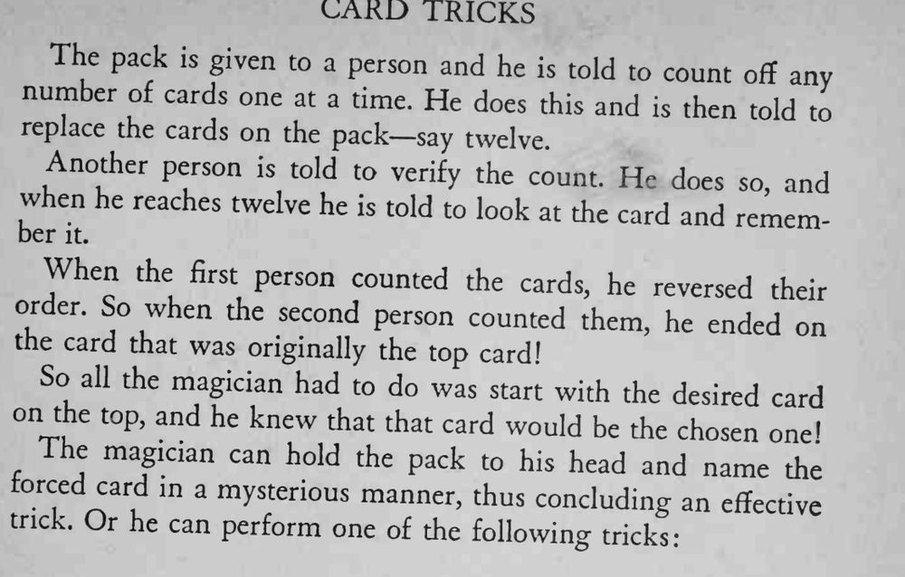

两位观众先后从牌堆顶数出同样张数的牌，第二次数到最后一张，正是一开始放在牌堆顶的那张牌。
第一位观众必须把数过的牌原样放回牌堆顶，顺序颠倒后迫选才成立。


Here is a simple and effective method of making a person take a desired card. The pack is given to a person and he is told to count any number of cards one at a time. He does and off this is then told to replace the cards on the pack— say twelve. Another person is told to verify the count. He does and when he reaches twelve he so, is told to look at the card and remember it. When the first person counted the cards, he reversed order. So when the second person counted their them, he ended on the card that was originally the top card! So all the magician had to do was start with the desired card on the top, and he knew that that card would be the chosen one' The magician can hold the pack to his head and name the forced card in a mysterious manner, thus concluding an trick. Or he can perform one of the following effective tricks: